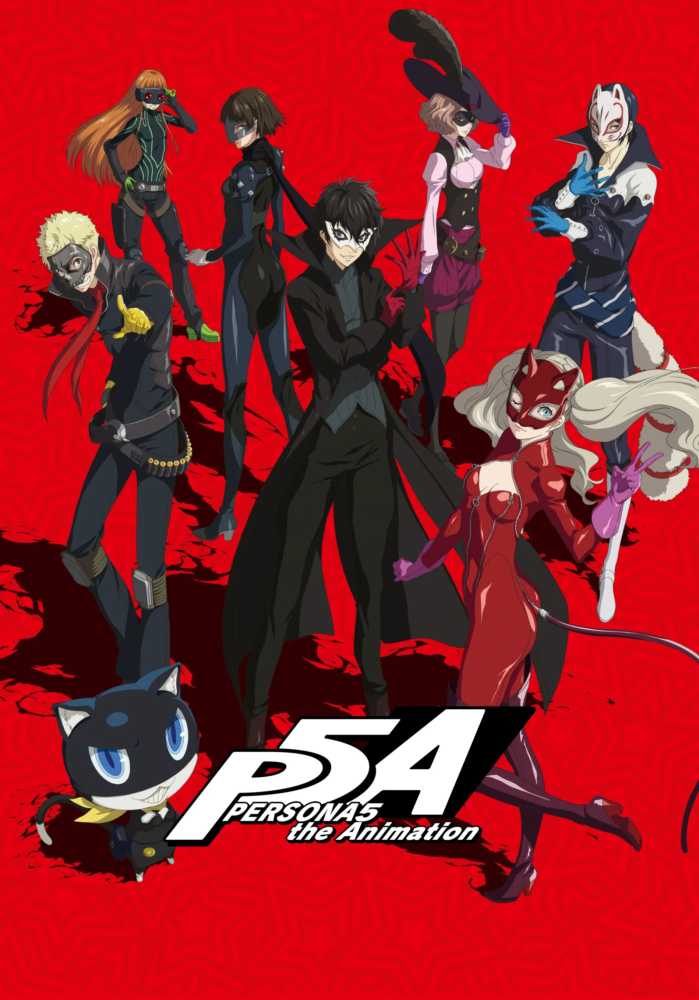

I AM THOU, THOU ART I
Ren llega a Tokio tras un arresto injusto y descubre el Metaverso.
THE PHANTOM THIEVES RETURN
La adaptación animada de la historia de los Phantom Thieves, siguiendo a Ren Amamiya y sus compañeros mientras descubren el misterioso Metaverso.
VER EPISODIOS
Persona 5 The Animation adapta la historia principal del videojuego y presenta la formación de los Phantom Thieves, sus primeros Palacios y los conflictos que atraviesan durante su vida escolar.
La serie combina escenas de acción, vida cotidiana y los momentos más importantes de la historia de Persona 5.
Ren llega a Tokio tras un arresto injusto y descubre el Metaverso.
Ren y Ryuji exploran el castillo y despiertan a sus Personas.
El grupo descubre los abusos de Kamoshida y decide detenerlo.
Ann despierta a su Persona y se une a la misión contra Kamoshida.
Derrotan a Kamoshida y logran que confiese sus crímenes públicamente.
Yusuke descubre los plagios de Madarame y despierta a su Persona.
El grupo se adentra en el museo de Madarame para investigarlo.
Envían la carta de aviso a Madarame y vencen a su sombra.
Ren descubre que su profesora trabaja en un servicio de sirvientas a domicilio.
Makoto descubre la identidad del grupo y los desafía a detener a la mafia.
El equipo investiga el submundo criminal para localizar al chantajista Kaneshiro.
Makoto despierta a su Persona y se une para infiltrarse en el banco de Kaneshiro.
Los Phantom Thieves derrotan a Kaneshiro y liberan a los estudiantes del chantaje.
El hacker Alibaba contacta al grupo tras su victoria en el banco.
Alibaba pide cambiar el corazón de Futaba a cambio de detener a Medjed.
El grupo entra al Palacio de Futaba, una pirámide nacida de su culpa.
El equipo se adentra en la pirámide para ayudar a Futaba a sanar.
Futaba despierta a su Persona y se convierte en la navegante del grupo.
Los estudiantes viajan de excursión a Hawái mientras crece su fama mundial.
Una misteriosa "Ladrona de la Belleza" aparece junto a Morgana en un nuevo Palacio.
Haru despierta a su Persona y se une al grupo como Noir.
El equipo avanza por la estación espacial de Okumura bajo gran presión mediática.
Derrotan a Okumura, pero un asesino misterioso provoca su colapso mental.
Culpados por la muerte de Okumura, los ladrones buscan limpiar su nombre.
Akechi se une al grupo para infiltrarse en el casino de Sae Niijima.
El atraco al casino concluye y Ren es arrestado tras servirse de señuelo.
Interrogan a Ren mientras se revela la identidad del verdadero traidor.
Los Phantom Thieves ejecutan su plan final para salvar a Ren y vencer al villano.
Una adaptación que lleva la estética, los personajes y el mundo de Persona 5 a la animación.